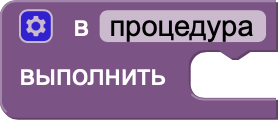
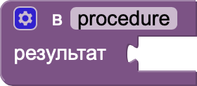

Блоки процедур в MIT App Inventor
Блоки процедур в MIT App Inventor позволяют создавать собственные подпрограммы для выполнения повторяющихся или сложных действий. Они помогают структурировать код, упрощая его чтение и уменьшая количество повторяющихся блоков. С помощью этих блоков вы можете определить процедуру, задать ей имя и указать набор действий, которые она должна выполнять. Процедуры могут быть с возвращаемым значением или без него.
- procedure do (процедура выполнить): Этот блок определяет процедуру, которая содержит набор действий. Процедура выполняет инструкции, но не возвращает значений.
- procedure result (процедура результат): Этот блок определяет процедуру, которая выполняет действия и возвращает результат (значение).
- call do (вызвать процедуру): Этот блок вызывает ранее определённую процедуру для выполнения её действий.
- call result (вызвать результат):Этот блок вызывает ранее определённую процедуру, которая возвращает значение, и использует это значение для дальнейших операций.
Блоки 1-го уровня

Процедура выполнить (процедура)
–– выполнить действия, указанные в процедуре
–– выполнить действия, указанные в процедуре

Процедура результат (возвращаемое значение)
–– выполнить действия и вернуть результат
–– выполнить действия и вернуть результат
Блоки 2-го уровня первого типа
Вызвать процедуру (процедура)
-– выполняются действия, указанные в процедуре
-– выполняются действия, указанные в процедуре
Блоки 3-го уровня
Вызвать результат (передать параметры)
-– использовать возвращённое значение для дальнейших вычислений
-– использовать возвращённое значение для дальнейших вычислений